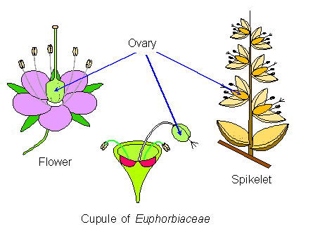

Ovary.
The hollow basal region of a carpel, containing one or more ovules and surmounted by the style(s) and stigma(s). It is made up of one or more carpels which may fuse together in different ways to form one or more chambers (locules).The ovary is generally above the perianth parts (superior) or below them (inferior)